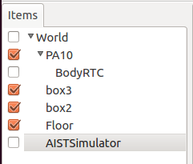

接続による拡張¶
このチュートリアルではChoreonoidを外部のシステムに接続する方法を学習します。
サンプルプロジェクトのロード¶
メニューから”File” -> “Open Project”を選択し、”share/project”フォルダの”OpenRTM-PA10Pickup.cnoid”を開きます。
独自のプロジェクト用の設定¶
自分のロボットのためのモーションを編集したい場合、以下の設定を行ってください。
メインメニューでの操作:
Worldアイテムを作成（ “File” -> “New...” -> “World”を選択）。
Modelアイテムのロード（”File” -> “Open...” -> “OpenHRP Model File”を選択）。
BodyRTCアイテムを作成（”File” -> “New...” -> “BodyRTC”を選択）
物理シミュレーションをする必要があれば以下のアイテムも追加してください:
floorモデルのロード（”File” -> “Open...” -> “OpenHRP Model File”を選択）
AISTSimulatorアイテムを作成（”File” -> “New...” -> “AISTSimulator”を選択）。
Itemパネルでの操作:
アイテムをドラッグアンドドロップして以下の順番に並べます（modelアイテムとsimulatorアイテムはworldアイテムの下に、BodyRTCアイテムはmodelアイテムの下に）。
Itemパネル上でBodyRTCアイテムをクリックしてプロパティを以下のように変更します:
- Controller module name: PA10PickupControllerRTC
- Configuration mode: Use Configuration File
- Configuration file name: PA10Pickup.conf
以下の内容の”PA10Pickup.conf”という設定ファイルを作成します:
1 2 3 4 5 6 | in-port = u_in:JOINT_TORQUE
out-port = u_out:HAND_R,HAND_L:JOINT_TORQUE
out-port = q:JOINT_VALUE
connection = u_out:u_in
connection = u_in:u_out
connection = q:q
|
上記の例はPA10PickupControllerRTCのインスタンスを作成して各ポートをロボットに接続します。
hrpsys-baseに同封された各コンポーネントを使うことや独自のコンポーネントを実装することもできます（ 接続による拡張 参照）。